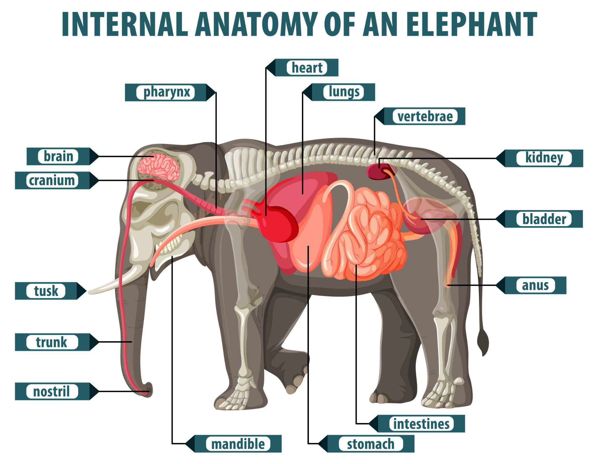
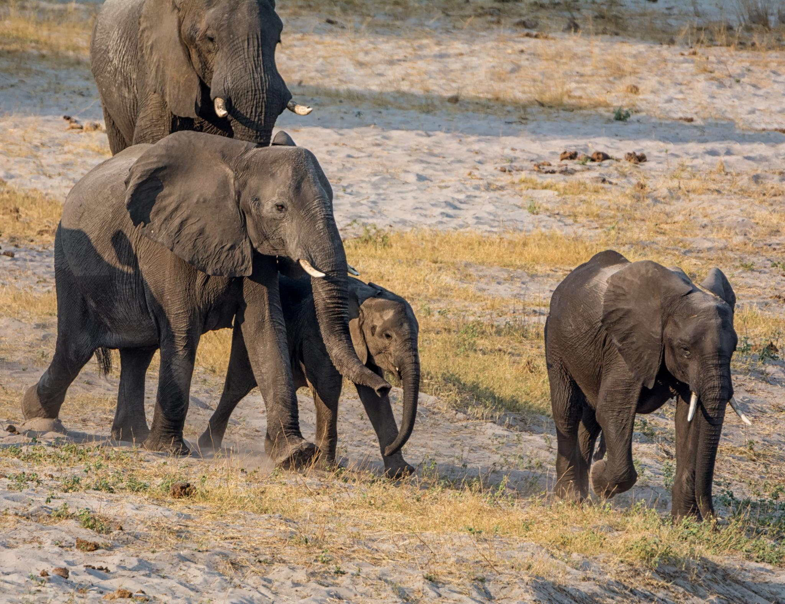

Elephants are the largest land animals on Earth and among the most intelligent creatures in the animal kingdom. Known for their memory, emotional intelligence, and strong family bonds, elephants play a major role in maintaining healthy ecosystems.
These gentle giants have existed for millions of years and remain one of the most respected animals in wildlife documentaries and conservation programs.
Elephants possess long trunks, massive tusks, large ears for cooling, and powerful legs capable of supporting enormous body weight. Their trunks contain thousands of muscles used for feeding, drinking, communication, and defense.


Elephants inhabit grasslands, forests, wetlands, and savannas across Africa and Asia. They require large areas with water sources and abundant vegetation.
Elephant populations have declined significantly due to ivory poaching and habitat destruction. African forest elephants are critically endangered.
Conservation groups protect elephants through wildlife reserves, anti-poaching patrols, habitat restoration, and public education programs.
| Feature | Information |
|---|---|
| Scientific Name | Loxodonta africana |
| Average Lifespan | 60–70 years |
| Weight | 2,700–6,000 kg |
| Diet | Herbivore |
| Largest Land Animal | Yes |